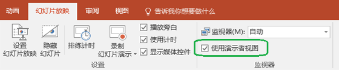

如何打开Powerpoint演讲者视图
介绍打开Powerpoint演讲者视图的方法。
确保用于演示文稿的计算机支持使用多个监视器。 如果计算机有多个输入端口，例如 DVI、VGA、HDMI、ir DisplayPort，则它应支持多个监视器。 大多数现代台式计算机都内置了多个监视器支持；如果没有，则需要两个视频卡。
- 选择幻灯片放映选项卡。
- 选中使用演示者视图复选框。
- 选择要显示“演示者视图”的监视器。
-
选择
 "从头开始" 或按Alt+ F5键打开演讲者视图。
"从头开始" 或按Alt+ F5键打开演讲者视图。